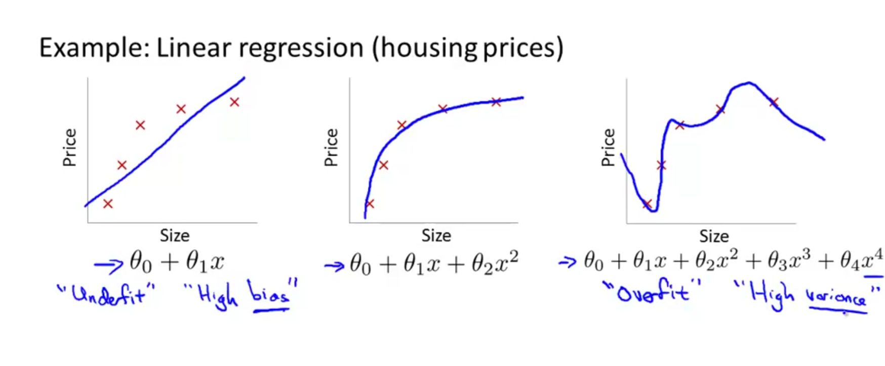
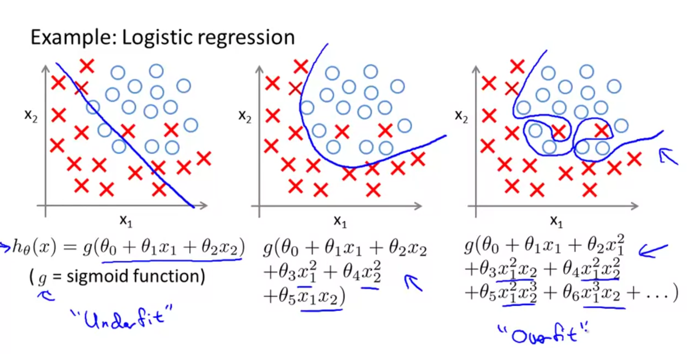

Reducing overfitting using regularization
Examples of overfitting¶
A model is set to be over fitting, when it performs exceedingly well on training data but poorly on validation/test data. Such a model typically is of higher order and having a high variance.

The image above shows 3 models, the one of right is over fitting and the one on left is under fitting (has a high bias). Under fitting can happen when the model is too simple or uses too few features to model the complexity. A overfitting model has high variance because if you change or shuffle the input training set slightly, the model changes dramatically. In other words, it has high variability depending on the input set.

The graphic above shows the different levels of fit for logistic regression.
Addressing overfitting¶
Some options include
- reducing number of features. However this leads to reducing useful information available.
- Regularization. Here, we will keep all the features, but limit or constrain the magnitude their coefficients $\theta_{j}$. This works well even when you have a lot of features.
Regularization for linear regression¶
Regularization is the process of applying penalty to coefficients of higher order variables. The higher the coefficients are for those variables, the higher the cost/loss is. Thus, the optimization process will move toward fits where such coefficients are smaller, close to 0. Intuitively, this leads to a simpler model, that is less prone to overfitting. In practice, we may not know which variables are higher order polynomials. Thus, we add penalties to all coefficients. Thus, the new cost function looks like
$$ J(\theta) = \frac{1}{2m}[\sum_{i=1}^{m}(h_{\theta}(x_{i})-y_{i})^{2} + \lambda \sum_{j=1}^{n}\theta_{j}^{2}] $$ where $\lambda$ is the regularization parameter. The first part of the loss function fights to get the best fit while the second fights to keep the model simple and coefficients smaller. If $\lambda$ is too high, then model results in underfitting which has a high bias. If $\lambda$ is too low, then it results in overfitting which has a high variance.
L1, L2 (Lasso, Ridge) regularizations¶
In the equation above, the $\theta$ was squared in the regularization function. This is L2 regularization, aka. Ridge regression. Remember this as L2 squares the coefficients ($\theta$) attached to $\lambda$.
Whereas, in the case of L1, the absolute value of $\theta$ is used. L1 is also called Lasso regression which stands for Least Absolute Shrinkage and Selection Operator. The same cost function for lasso would look like the below:
$$ J(\theta) = \frac{1}{2m}[\sum_{i=1}^{m}(h_{\theta}(x_{i})-y_{i})^{2} + \lambda \sum_{j=1}^{n}|\theta_{j}|] $$
Mathematically, we don't penalize $\theta_{0}$. However in practice, it makes little difference if you penalize all coefficients or if you ignore the intercept.
Computing gradient descent with regularization¶
Computing the gradient descent for this new loss function, we get:
$$
\theta_{0} := \theta_{0} - \alpha\frac{1}{m} \sum_{i=1}^{m}(h_{\theta}(x_{i})-y_{i})x_{0i}
$$
$$
\theta_{j} := \theta_{j} - \alpha[\frac{1}{m} \sum_{i=1}^{m}(h_{\theta}(x_{i})-y_{i})x_{ji} - \frac{\lambda}{m}\theta_{j}]
$$
which is rewritten as
$$
\theta_{j} := \theta_{j}(1-\alpha\frac{\lambda}{m}) - \alpha\frac{1}{m}\sum_{i=1}^{m}(h_{\theta}(x_{i})-y_{i})x_{ji}
$$
The term $(1-\alpha\frac{\lambda}{m})$ is always <1, which has a shrinking effect on $\theta$. Thus, for each iteration, it strives to keep it small.
Regularization for logistic regression¶
The cost function of a non-regularized logistic function looks like
$$ J(\theta) = \frac{-1}{m}\sum_{i=1}^{m}[y_{i}log(h_{\theta}(x_{i})) + (1-y_{i})log(1-h_{\theta}(x_{i}))] $$ to this cost function, we add the regularization parameter to get: $$ J(\theta) = \frac{-1}{m}\sum_{i=1}^{m}[y_{i}log(h_{\theta}(x_{i})) + (1-y_{i})log(1-h_{\theta}(x_{i}))] + \frac{\lambda}{2m}\sum_{j=1}^{n}\theta_{j}^{2} $$ The regularization term avoids penalty for bias term $\theta_{0}$.
The gradient descent for logistic regression with regularization is identical to that of the linear regression explained earlier, except that, the hypothesis function is a sigmoid.